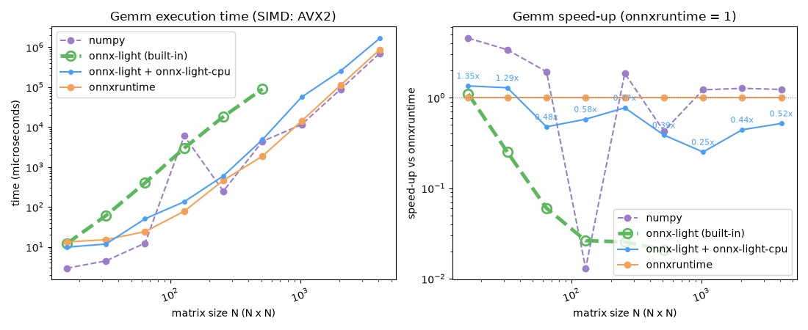

Note
Go to the end to download the full example code.
Benchmark Gemm: numpy vs onnxruntime vs onnx-light vs onnx-light-cpu#
This example compares four ways of computing a float32 general matrix
multiplication Y = A @ B for square matrices of increasing size:
numpy -
numpy.matmul()(A @ B), which dispatches to the platform BLAS and is used here as the reference baseline.onnxruntime - running a single-node
GemmONNX model.onnx-light (built-in) - the same single-node model run through
onnx-light’sReferenceEvaluatorwithout registeringonnx-light-cpu, i.e. onnx-light’s own (non-SIMD) referenceGemmkernel. Only measured for the smaller sizes in the grid – see “Why the built-in curve stops early” below.onnx-light + onnx-light-cpu - the SIMD-accelerated
Gemmkernel thatonnx-lightdispatches to afteronnx_light_cpu.register_kernels()installs the optimized kernel implementation.
The back-ends compute the same result; the goal is to see how their timings evolve as the matrices grow.
Why the built-in curve stops early#
onnx-light’s dispatch table is a single, process-wide table:
onnx_light_cpu.register_kernels() permanently replaces the default
domain’s Gemm entry, and a given RuntimeSession resolves (and caches)
its kernels on its first run. So the only way to observe the un-accelerated,
built-in kernel and the accelerated one in the same process is to build a
separate model/session for the built-in curve and run it before
onnx_light_cpu.register_kernels() is ever called – which is what this
example does. Since the built-in kernel is a plain reference implementation
with no SIMD or blocking/packing, its cost grows much faster than the other
three back-ends; to keep the benchmark’s runtime reasonable it is only
measured up to 512 while the accelerated back-ends continue to 4096.
Setup#
Report which SIMD level the current CPU provides. The mapping is 0=None,
1=SSE2, 2=AVX, 3=AVX2 and 4=AVX512.
import time
import numpy as np
import onnxruntime
# ``onnx-light`` ships ``onnx_light.onnx`` as a drop-in replacement for the
# ``onnx`` package; use it to build the model so the example depends on
# onnx-light rather than onnx.
from onnx_light.onnx import TensorProto, checker, helper
from onnx_light.onnx.reference import ReferenceEvaluator
from onnx_light_cpu import (
clear_used_kernel_names,
register_kernels,
registered_kernel_names,
used_kernel_names,
)
from onnx_light_cpu.onnx_py._cpukernels import detect_simd_level, has_cpu_kernels
from onnx_light_cpu.onnx_py._cpuregister import set_kernel_usage_recording
_SIMD_NAMES = {0: "scalar", 1: "SSE2", 2: "AVX", 3: "AVX2", 4: "AVX-512"}
assert has_cpu_kernels()
level = detect_simd_level()
simd_name = _SIMD_NAMES.get(level, level)
print(f"CPU kernels available, SIMD level: {level} ({simd_name})")
CPU kernels available, SIMD level: 3 (AVX2)
Prime the built-in onnx-light kernel before registering onnx-light-cpu#
A dedicated model/session is run once while onnx-light-cpu’s accelerated
Gemm kernel has not been installed yet, so it resolves and caches
onnx-light’s own built-in reference kernel. It is timed below alongside the
other runtimes up to size 512.
size_grid = [16, 32, 64, 128, 256, 512, 1024, 2048, 4096]
alone_sizes = [16, 32, 64, 128, 256, 512]
rng = np.random.default_rng(0)
alone_model = make_gemm_model()
alone_session = ReferenceEvaluator(alone_model)
alone_session.run(
None,
{
"A": np.zeros((1, 1), dtype=np.float32),
"B": np.zeros((1, 1), dtype=np.float32),
},
)
alone_times = {}
light_label = "onnx-light + onnx-light-cpu"
alone_label = "onnx-light (built-in)"
# ``register_kernels()`` needs the ``_cpuregister`` extension, which is only
# built with ``ONNX_LIGHT_CPU_WITH_ONNX_LIGHT=ON``. When it is missing (as in
# the documentation build) the onnx-light-cpu curve is simply omitted; the
# import above stays unconditional.
register_kernels()
light_session = ReferenceEvaluator(model)
def run_light(a, b):
return light_session.run(None, {"A": a, "B": b})[0]
accelerated_kernel_name = registered_kernel_names()["Gemm"]
# onnx-light-cpu kernels record their name on every run (a mutex per call);
# only the accelerated curve would pay that cost, so disable recording to keep
# the timings fair. Recording is briefly re-enabled below to verify the exact
# implementation used for every benchmark size.
set_kernel_usage_recording(False)
Run the rest of the benchmark#
For every size the same square inputs are fed to numpy, onnx-light-cpu and
onnxruntime. Runtimes whose timings form speed-up ratios are measured together,
rotating their order to reduce cache and scheduling bias. The results are
checked against numpy.matmul() so every implementation agrees.
rng = np.random.default_rng(0)
rows = []
for size in size_grid:
a = rng.standard_normal((size, size)).astype(np.float32)
b = rng.standard_normal((size, size)).astype(np.float32)
expected = a @ b
set_kernel_usage_recording(True)
clear_used_kernel_names()
run_light(a, b)
accelerated_kernel_names = used_kernel_names()
assert accelerated_kernel_name in accelerated_kernel_names, accelerated_kernel_names
set_kernel_usage_recording(False)
repeat = max(7, min(100, 20_000_000 // (size * size * size)))
numpy_time = measure(lambda a=a, b=b: a @ b, repeat)
if size in alone_sizes:
alone_time, cpu_time, ort_time = measure_together(
lambda a=a, b=b: alone_session.run(None, {"A": a, "B": b}),
lambda a=a, b=b: run_light(a, b),
lambda a=a, b=b: session.run(None, {"A": a, "B": b}),
repeat=repeat,
)
alone_times[size] = alone_time
np.testing.assert_allclose(
alone_session.run(None, {"A": a, "B": b})[0],
expected,
rtol=1e-2,
atol=1e-2,
)
else:
cpu_time, ort_time = measure_together(
lambda a=a, b=b: run_light(a, b),
lambda a=a, b=b: session.run(None, {"A": a, "B": b}),
repeat=repeat,
)
np.testing.assert_allclose(run_light(a, b), expected, rtol=1e-2, atol=1e-2)
np.testing.assert_allclose(
session.run(None, {"A": a, "B": b})[0], expected, rtol=1e-2, atol=1e-2
)
rows.append((size, numpy_time, cpu_time, ort_time))
alone_text = f"{alone_times[size] * 1e6:10.2f} us" if size in alone_times else "not measured"
print(
f"size={size:>4}x{size:<4} | numpy={numpy_time * 1e6:10.2f} us | "
f"onnx-light={alone_text} | "
f"onnx-light-cpu={cpu_time * 1e6:10.2f} us | "
f"onnxruntime={ort_time * 1e6:10.2f} us"
)
print(
"verified onnx-light-cpu Gemm for every benchmark size: "
f"accelerated={accelerated_kernel_name}"
)
set_kernel_usage_recording(True)
sizes = np.array([r[0] for r in rows])
numpy_times = np.array([r[1] for r in rows])
cpu_times = np.array([r[2] for r in rows])
ort_times = np.array([r[3] for r in rows])
alone_grid = np.array(alone_sizes)
alone_grid_times = np.array([alone_times[size] for size in alone_sizes])
size= 16x16 | numpy= 2.92 us | onnx-light= 12.07 us | onnx-light-cpu= 9.84 us | onnxruntime= 13.27 us
size= 32x32 | numpy= 4.47 us | onnx-light= 60.54 us | onnx-light-cpu= 11.77 us | onnxruntime= 15.16 us
size= 64x64 | numpy= 12.41 us | onnx-light= 401.22 us | onnx-light-cpu= 50.50 us | onnxruntime= 24.07 us
size= 128x128 | numpy= 5996.65 us | onnx-light= 2966.44 us | onnx-light-cpu= 134.82 us | onnxruntime= 77.99 us
size= 256x256 | numpy= 248.52 us | onnx-light= 18149.09 us | onnx-light-cpu= 597.49 us | onnxruntime= 461.53 us
size= 512x512 | numpy= 4385.52 us | onnx-light= 89903.01 us | onnx-light-cpu= 4841.34 us | onnxruntime= 1869.20 us
size=1024x1024 | numpy= 11554.86 us | onnx-light=not measured | onnx-light-cpu= 56312.71 us | onnxruntime= 14130.02 us
size=2048x2048 | numpy= 88803.71 us | onnx-light=not measured | onnx-light-cpu= 254977.02 us | onnxruntime= 112718.94 us
size=4096x4096 | numpy= 706629.50 us | onnx-light=not measured | onnx-light-cpu=1680072.43 us | onnxruntime= 872046.09 us
verified onnx-light-cpu Gemm for every benchmark size: accelerated=onnx_light_cpu::Gemm
Plot the timings#
The left panel shows the raw execution time versus the matrix size on a
log-log scale. The right panel shows the speed-up relative to
onnxruntime (the baseline): for each back-end the onnxruntime time is
divided by the back-end time, so values above 1 are faster than
onnxruntime and values below 1 are slower. The speed-up is drawn on a
logarithmic y-axis so that a given ratio and its reciprocal are equidistant
from the 1 baseline. The built-in onnx-light curve
only has points for the sizes it was measured on (see “Why the built-in
curve stops early” above).
import matplotlib.pyplot as plt
fig, (ax_time, ax_speedup) = plt.subplots(1, 2, figsize=(11, 4.5))
ax_time.plot(sizes, numpy_times * 1e6, "o--", label="numpy", color="#9b7ec8")
ax_time.plot(
alone_grid,
alone_grid_times * 1e6,
"o--",
label=alone_label,
color="#5cb85c",
linewidth=3.5,
markersize=9,
markerfacecolor="none",
markeredgewidth=2,
zorder=2,
)
if light_session is not None:
ax_time.plot(
sizes,
cpu_times * 1e6,
"o-",
label=light_label,
color="#4a9eff",
linewidth=1.5,
markersize=4,
zorder=3,
)
ax_time.plot(sizes, ort_times * 1e6, "o-", label="onnxruntime", color="#f4a259")
ax_time.set_xscale("log")
ax_time.set_yscale("log")
ax_time.set_xlabel("matrix size N (N x N)")
ax_time.set_ylabel("time (microseconds)")
ax_time.set_title(f"Gemm execution time (SIMD: {simd_name})")
ax_time.tick_params(axis="x", labelrotation=20)
ax_time.legend()
ort_times_by_size = dict(zip(sizes.tolist(), ort_times.tolist(), strict=True))
alone_ort_times = np.array([ort_times_by_size[size] for size in alone_sizes])
ax_speedup.plot(sizes, ort_times / numpy_times, "o--", label="numpy", color="#9b7ec8")
ax_speedup.plot(
alone_grid,
alone_ort_times / alone_grid_times,
"o--",
label=alone_label,
color="#5cb85c",
linewidth=3.5,
markersize=9,
markerfacecolor="none",
markeredgewidth=2,
zorder=2,
)
if light_session is not None:
cpu_speedup = ort_times / cpu_times
ax_speedup.plot(
sizes,
cpu_speedup,
"o-",
label=light_label,
color="#4a9eff",
linewidth=1.5,
markersize=4,
zorder=3,
)
for size, speedup in zip(sizes, cpu_speedup, strict=True):
ax_speedup.annotate(
f"{speedup:.2f}x",
(size, speedup),
xytext=(0, 7),
textcoords="offset points",
ha="center",
fontsize=8,
color="#4a9eff",
)
ax_speedup.plot(sizes, ort_times / ort_times, "o-", label="onnxruntime", color="#f4a259")
ax_speedup.axhline(1.0, color="grey", linewidth=0.8, linestyle=":")
ax_speedup.set_xscale("log")
ax_speedup.set_yscale("log")
ax_speedup.set_xlabel("matrix size N (N x N)")
ax_speedup.set_ylabel("speed-up vs onnxruntime")
ax_speedup.set_title("Gemm speed-up (onnxruntime = 1)")
ax_speedup.tick_params(axis="x", labelrotation=20)
ax_speedup.legend()
fig.tight_layout()
fig.savefig("plot_gemm_benchmark.png")
plt.show()

Total running time of the script: (0 minutes 48.041 seconds)